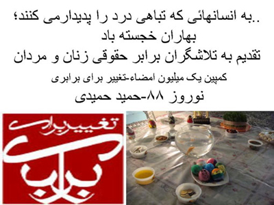

|
|

هدیه نوروزی به کنشگران کمپین
پنج شنبه29 اسفند 1387

تغییر برای برابری - حمید حمیدی از حامیان اولیه کمپین یک میلیون امضا کلیپی را آماده و به عنوان هدیه نوروزی به کنشگران کمپین تقدیم کرده است. تغییربرای برابری ضمن سپاسگزاری از وی و کوششی که برای دلگرمی همه کنشگران کمپین به کار برده است، سال نو را به او و همه زنان و مردان برابری خواه در جنبش زنان و دیگر جنبش های اجتماعی تبریک می گوید.
این کلیپ را می توانید در لینک های زیر دانلود کرده و ببینید :
nourooz88 film
http://www.radiomihan.com/Nourooz88.wmv
power point 88